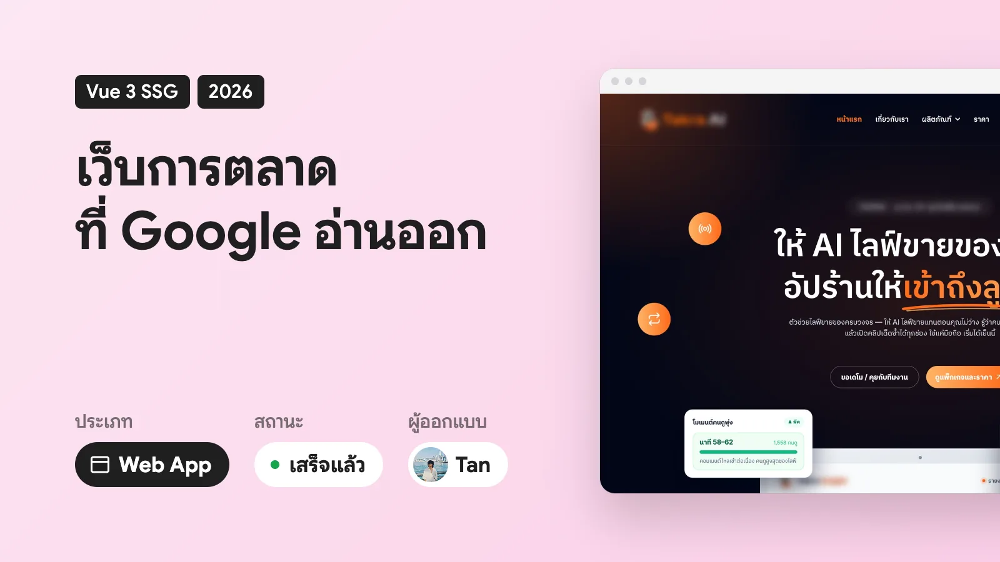
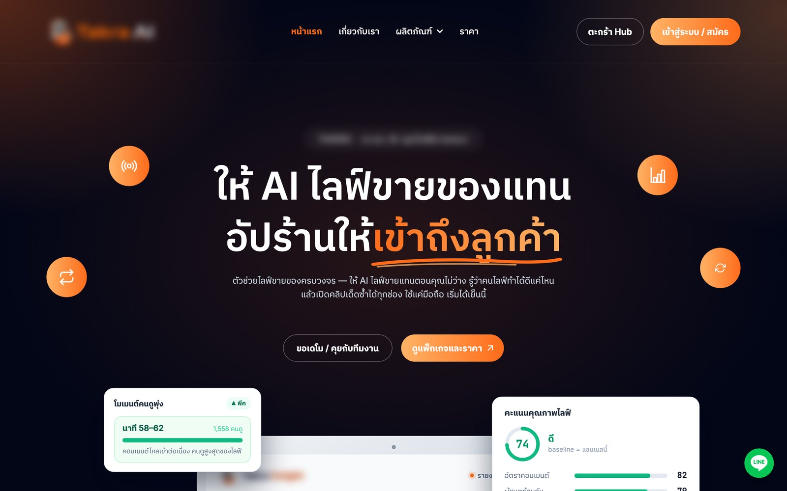
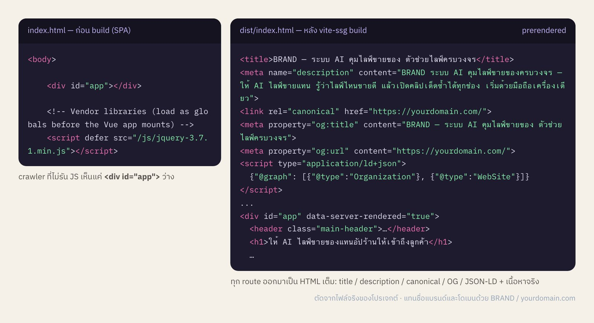
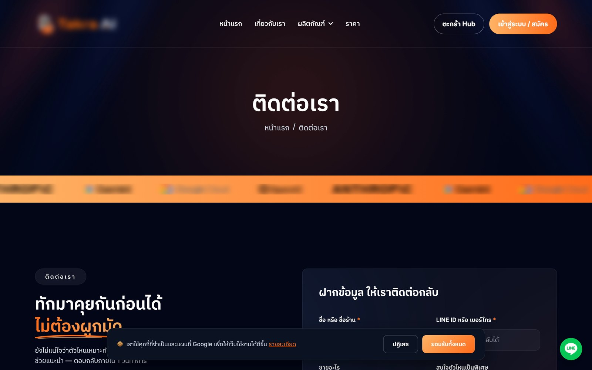
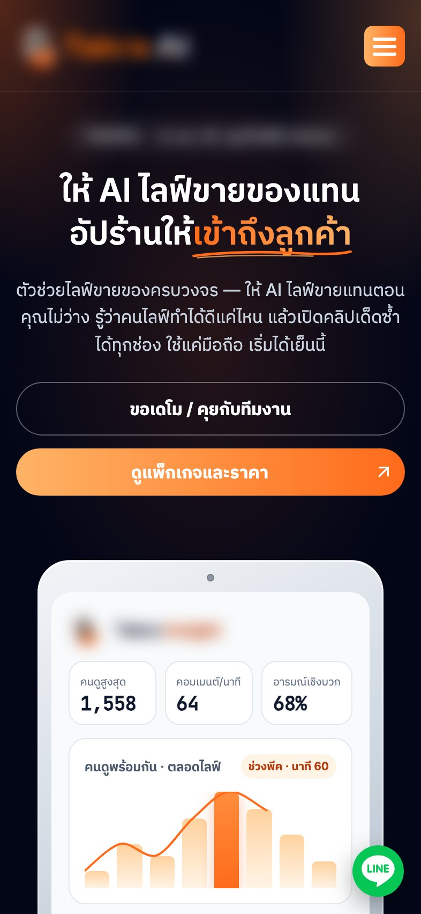
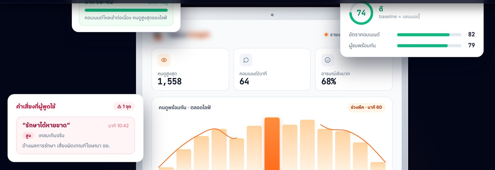
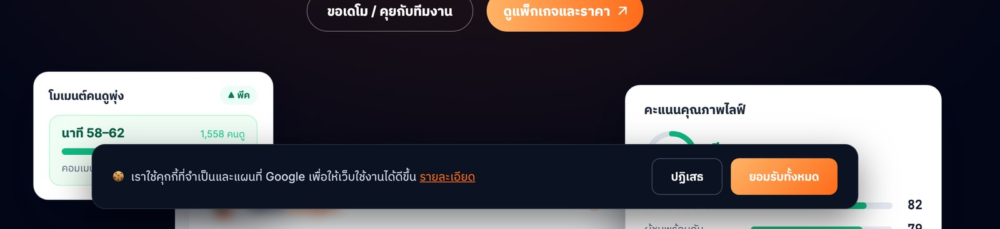
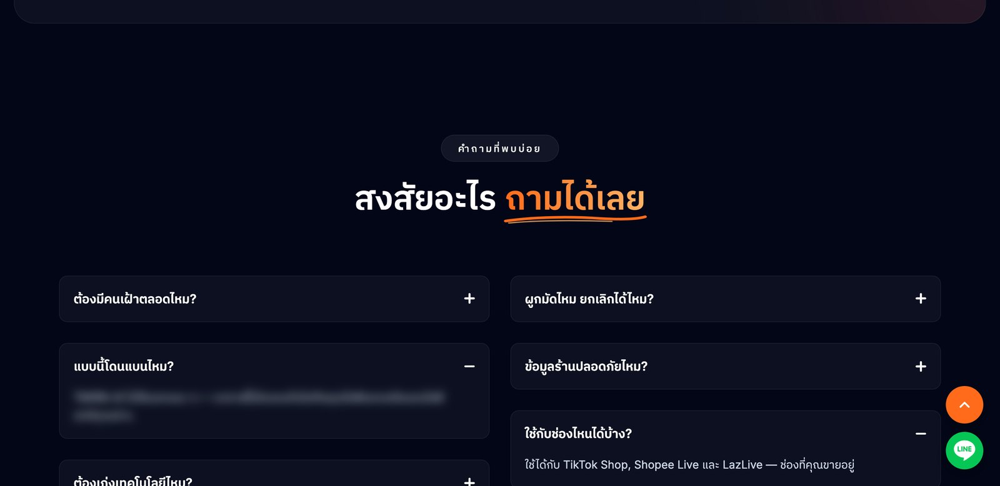

เว็บการตลาดไลฟ์คอมเมิร์ซ
เว็บการตลาดของ แพลตฟอร์มไลฟ์ AI Avatar (ระบบ AI คุมไลฟ์ขายของ) — migrate จาก template HTML/jQuery ขึ้น Vue 3 + Vite SSG ที่ prerender ทุกหน้าเป็น static, ใส่ SEO + structured data ต่อ route และแทนภาพนิ่งด้วย component โต้ตอบจริง เร็ว ปลอดภัย ดูแลง่าย

เว็บการตลาดของ แพลตฟอร์มไลฟ์ AI Avatar (ระบบ AI คุมไลฟ์ขายของ) — ยก template HTML/jQuery ที่ซื้อมา ขึ้น Vue 3 SPA แล้ว prerender ทุกหน้าเป็น static, ใส่ SEO + structured data ต่อ route, และแทนภาพนิ่งด้วย component โต้ตอบจริง
ปัญหาที่เจอ
ทำไมเว็บการตลาดที่ทั้งสวย โหลดไว และ Google เห็นครบ ถึงทำพร้อมกันยาก?
Template ที่ซื้อมาเป็น static HTML + jQuery + GSAP — สวยแต่เป็นหน้าเดียว ไม่มี route, ไม่มี SEO ต่อหน้า, ทุก section เป็นรูป .jpg ภาพนิ่ง พอจะทำเว็บจริงหลายหน้า + ให้ Google index ครบ + มี element โต้ตอบ ก็ต้องรื้อทั้งงาน
Template เป็น static HTML หน้าเดียว
หลาย service page (AI / Insight / Rerun) ต้อง copy โครง HTML ซ้ำ — แก้ header/footer ทีต้องไล่แก้ทุกไฟล์ ดูแลไม่ไหว
SPA ปกติ crawler เห็นหน้าว่าง
ถ้าเปลี่ยนเป็น Vue เฉย ๆ Google เปิดมาเจอแค่ <div id="app"> เปล่า — content ถูก render ด้วย JS ทีหลัง SEO พังทันที
ทุก section เป็นรูปภาพนิ่ง
dashboard สินค้าเป็น .jpg โหลดช้า ดูไม่มีชีวิต และแก้ตัวเลขทีต้อง export รูปใหม่ทุกครั้ง
โดเมนซ้ำ apex กับ www
yourdomain.com กับ www.yourdomain.com ตอบ 200 ทั้งคู่ — Google เห็นเป็น 2 เว็บ (duplicate content) คะแนน SEO ถูกหารแยกกัน
ต้องมี cookie consent (PDPA)
โหลด 3rd-party (แผนที่ฝัง) ก่อนผู้ใช้กดยินยอมไม่ได้ — ผิด พ.ร.บ.คุ้มครองข้อมูลส่วนบุคคลของไทย
วิธีแก้ปัญหา
ยก template ขึ้น Vue 3 แล้ว prerender เป็น static — ได้ทั้งความสวยเดิม, หลายหน้า, SEO เต็ม และ element โต้ตอบจริง

Vue 3 + vue-router หลาย route
component เดียว reuse ทุกหน้า (header/footer/section) — แก้ที่เดียวมีผลทุกที่ เพิ่ม service page ใหม่ได้ไวโดยไม่ copy โครงซ้ำ
vite-ssg prerender ทุก route
build ออกมาเป็น HTML static เต็มหน้า — crawler เปิดมาเจอ content ครบ ส่วนผู้ใช้ได้ SPA ที่ hydrate ต่อลื่น ๆ
แทนรูปนิ่งด้วย component โต้ตอบ
InsightShowcase เป็น dashboard จริง (motion-v + SVG) — แก้ตัวเลขในโค้ด ไม่ต้อง export รูป โหลดเบา คมทุกจอ
useHead ต่อ route + JSON-LD
title / description / canonical / OG + structured data (Organization / WebSite / Breadcrumb) ครบทุกหน้าแบบ declarative
Cookie consent เองไม่พึ่ง lib
gate การโหลดแผนที่ไว้หลังผู้ใช้กด "ยอมรับ" เก็บสถานะใน localStorage รีเซ็ตได้ ตามหลัก PDPA
วิธีทำงาน — 4 จังหวะ
จากเขียน component ถึงหน้า static ที่ Google อ่านออก

เขียน view + useHead
แต่ละหน้าเป็น Vue component ผูก meta (title/desc/canonical/OG) ของตัวเอง
ประกอบ component โต้ตอบ
dashboard / mockup / ticker เป็น HTML + motion-v ไม่ใช่รูปภาพ
vite-ssg build
render ทุก route เป็น static HTML + inject JSON-LD + gen-sitemap
deploy static
เสิร์ฟผ่าน CDN / nginx — ไม่มี server render ตอน request
Tech Stack & Architecture
Vue 3 SPA ที่ prerender เป็น static — สวยเท่า SPA, SEO เท่า static, ไม่มี backend สำหรับหน้าเว็บ

Vue 3 + vite-ssg ให้ DX ของ SPA แต่ output เป็น static HTML ที่ crawler อ่านออก · useHead (@unhead/vue) จัดการ meta ต่อ route แบบ declarative — ไม่ต้องแก้ index.html เอง · motion-v ให้ animation สไตล์ Framer Motion บน Vue · แยกเป็น monorepo (web / admin / api) ให้เว็บการตลาด (static) ไม่ปนกับหลังบ้าน (Vue TS + Express + Prisma) · เว็บการตลาด ไม่มี backend runtime — เสิร์ฟไฟล์ static ล้วน โหลดไว แคชง่าย
สิ่งที่สร้าง — 8 ความสามารถหลัก
ครบตั้งแต่ SEO ระดับ engineering ถึง component โต้ตอบที่ไม่ใช่รูป

Interactive Insight Dashboard
dashboard รายงานไลฟ์ (KPI + กราฟคนดู + คะแนนคุณภาพ) ทำด้วย motion-v + SVG reveal ด้วย IntersectionObserver
Per-Route SEO (useHead)
ทุกหน้ามี title / description / canonical / OG / Twitter ของตัวเอง inject ตอน SSG build
JSON-LD @graph
structured data Organization + WebSite + Breadcrumb ต่อหน้า — ปูทางให้ rich result บน Google
Sitemap Generator
gen-sitemap.mjs สร้าง sitemap.xml จาก seoRoutes อัตโนมัติหลัง build ทุกครั้ง
Animated Components
StackTicker (โลโก้วิ่งวน), StepMockup และ reveal animation จาก IntersectionObserver
PDPA Cookie Consent
state เอง (localStorage) gate การโหลด 3rd-party (แผนที่) ไว้หลัง consent — ไม่ใช้ lib ภายนอก
Legacy .html → Clean Route
redirect ทุก *.html ของ template เดิมไป clean URL — refresh /contact.html ได้ + active-nav ยังทำงาน
Mobile-First Responsive
chart / mockup ปรับจำนวน bar ตามจอด้วย matchMedia — layout ตอบสนองทุก breakpoint
หน้าตา — Insight Dashboard
component โต้ตอบจริงที่ฝังในหน้า hero — ไม่ใช่ screenshot วาดด้วย HTML + SVG

Hack กับปัญหา
6 โจทย์ที่ต้องคิดทางแก้เอง — SSG / hydration quirk + SEO internals ของเว็บการตลาด

SPA ทำให้ crawler เห็นหน้าว่าง
Vue SPA render content ด้วย JS ทีหลัง — bot ที่ไม่รัน JS เต็มที่จะเห็นแค่ <div id="app"> เปล่า SEO ตาย
vite-ssg prerender ทุก route เป็น static HTML ตอน build (memory history ฝั่ง server, web history ฝั่ง client) แล้ว hydrate ต่อ — crawler เห็น content เต็ม ผู้ใช้ได้ SPAVite rewrite path รูป/JS ของ template พัง
template ผูก asset กับ /public + <base href="/"> — Vite ปกติจะ bundle/hash asset ในเทมเพลต ทำให้ path เดิมพังหมด
transformAssetUrls: { tags: {} } ใน vue plugin — บอก Vite ให้ปล่อย src/href/url() เป็น literal runtime path ไม่แตะ ทำให้ assets ชุดเดิมของ template resolve ได้ตรงcomponent โต้ตอบรันบน SSR ไม่ได้
ตอน prerender ไม่มี window / DOM จริง — IntersectionObserver, matchMedia, motion เรียกตอน render จะ crash หรือ hydrate mismatch
onMounted เท่านั้น + cleanup ใน onBeforeUnmount ให้ prerender ออก markup ตั้งต้น แล้วค่อย animate ตอน hydrate ฝั่ง client — SSR ผ่าน ไม่ mismatchapex กับ www ตอบ 200 ทั้งคู่
yourdomain.com และ www.yourdomain.com เสิร์ฟเหมือนกัน = duplicate content — Google หารคะแนน SEO / ลิงก์ / ผลแอด แยกกัน
canonical/og:url ใน useHead ชี้ apex เสมอ (คุมจาก SITE_URL ที่เดียว) + www→apex redirect ที่ชั้น ingress (301/308) — รวมสัญญาณ SEO เป็นก้อนเดียวลิงก์ในเนื้อหายังชี้ *.html
เนื้อหา/เมนูจาก template ยังลิงก์ contact.html — refresh หรือเปิดตรง /contact.html บน SPA แล้ว 404
/x.html → /x — ให้ direct-load / refresh resolve ได้ แล้ว normalize URL เป็น clean path เพื่อให้ active-nav (match บน $route.path) ยังทำงานdashboard เดิมเป็นรูป .jpg โหลดช้า
โชว์ผลเป็นภาพ export — โหลดหนัก เบลอบนจอ retina และแก้ตัวเลขทีต้องออกรูปใหม่ทั้งใบ
Design Decision ที่ตั้งใจเลือก
ขอบเขตที่จงใจเลือก — static-first, ของจริงไม่ใช่รูป, เคารพความยินยอม
เว็บการตลาดนี้ตั้งใจให้ "ไม่มี backend runtime" — ทุกหน้าเป็น static ที่ prerender ไว้แล้ว โหลดไว เสถียร แคชง่าย ส่วนที่ต้องโต้ตอบทำเป็น HTML component ไม่ใช่ screenshot และไม่โหลด 3rd-party ใด ๆ ก่อนผู้ใช้ยินยอม — ขอบเขตชัด = เร็ว ปลอดภัย และดูแลง่าย
Static-first
prerender ทุกหน้า ไม่ render ตอน request
ของจริง ไม่ใช่รูป
dashboard / ticker เป็น component แก้ในโค้ด
Consent ก่อนโหลด
ไม่ยิง 3rd-party ก่อนผู้ใช้กดยอมรับ
คง UI template เดิม
ย้าย stack ไม่รื้อดีไซน์ที่ผ่านการทดสอบ
Knowledge Domain ที่แข็งขึ้น
5 พื้นที่ความรู้ที่ระดับเราขยับขึ้นจริงจากการทำโปรเจกต์นี้

เข้าใจ flow prerender → hydrate ของ vite-ssg, การจัดการโค้ดที่รันได้เฉพาะฝั่ง client (window / observer ใน onMounted), และ transformAssetUrls ที่กันไม่ให้ Vite แตะ path ของ template เดิม บทเรียน: static-generation ให้ทั้ง DX ของ SPA และ SEO ของ HTML static
ลงมือทำ structured data (JSON-LD @graph: Organization / WebSite / Breadcrumb), canonical เพื่อแก้ duplicate domain, sitemap generator จาก route, และ OG/Twitter ต่อหน้า บทเรียน: ให้ Google เข้าใจเว็บ ต้องออกแบบ metadata เป็นระบบ ไม่ใช่แปะทีหลัง
ใช้ motion-v (spring transition), IntersectionObserver ทำ reveal-on-scroll, และวาด chart เอง (bar + เส้น trend Catmull-Rom → bezier) ที่ responsive ตามจอด้วย matchMedia บทเรียน: ข้อมูลที่ render เป็น HTML/SVG ดูแลง่ายและคมกว่ารูป export
เข้าใจว่าต้อง gate การโหลด 3rd-party (แผนที่) ไว้หลัง consent, เก็บ state ความยินยอมเอง (localStorage) แบบ reactive และ reset ได้ โดยไม่พึ่ง library บทเรียน: การเคารพความยินยอมออกแบบเข้าไปในโค้ด ไม่ใช่ patch ทีหลัง
วาง web (static marketing) / admin (Vue TS + Pinia) / api (Express + Prisma + Postgres) ใน npm workspaces เดียว, เสิร์ฟผ่าน Docker + nginx reverse proxy, ส่วน static ขึ้น CDN ได้ บทเรียน: แยกเลเยอร์ให้เว็บการตลาดเบาและ deploy แยกจากหลังบ้าน
ต่อยอด: เครื่องผลิตบทความอัตโนมัติ — หลังบ้าน + ไลน์ผลิต AI ที่ลงบทความให้เว็บนี้วันละ 5 เรื่อง